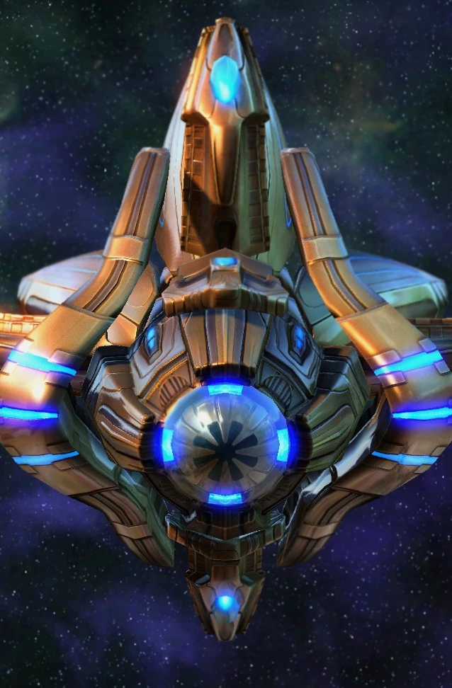

Наблюдатель
| Наблюдатель | |
|  | |
| Информация о юните | |
| Тип: | Возудшная единица |
| Описание: | Невидимый летающий шпион. Способен видеть замаскированных противников. |
| Построен из: | Завод робототехники |
| Стоимость: |  25 25  75 75  21 21  1 1 |
| Горячие клавиши: | B |
| Статистика юнита | |
| Защита: |  40 40  20 20  0 (+1) 0 (+1) |
| Атрибуты: | Легкий Механический Детектор |
| Зрение: | 11(+2.75) |
| Скорость: | 2.82(+1.41) |
| Силен против: | Темный тамплиерБаншиТаракан |
| Слаб против: | Фотонная пушкаРакетная турельСпоровой ползун |
Наблюдатель — это летающий замаскированный дрон-шпион и детектор для протоссов, построенный на заводе робототехники. Он постоянно замаскирован, поэтому противникам необходимо обнаружить его, чтобы увидеть и убить Наблюдателя. Наблюдатель имеет относительно низкую скорость полета, но его скорость можно увеличить, исследуя гравитационные ускорители в отсеке робототехники.